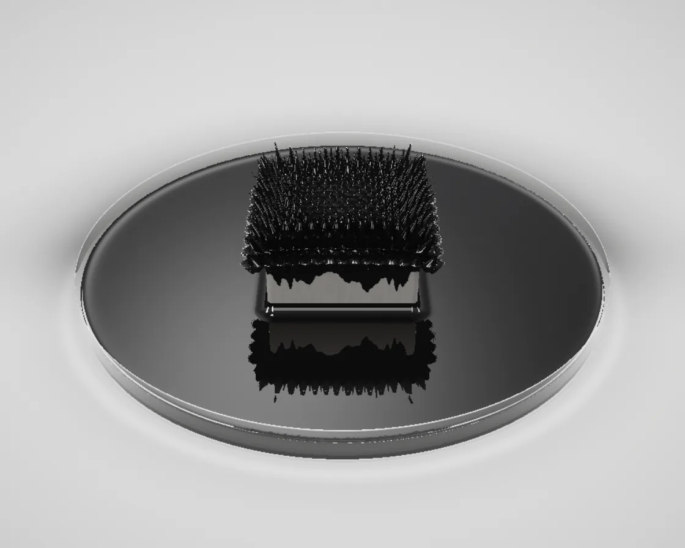

Ferrofluid
Ferrofluid is a WebGL effect: rosensweig spikes: concave cones on a lattice, raymarched as black mirrors. One plain JavaScript file with no dependencies; add it with npx motion-library add ferrofluid.

Open it live, tune it and copy the code
What is Ferrofluid?
Black, mirror-glossy spikes rise over a magnet under glass; move the pointer and the pool chases it, stretching and re-forming.
How does Ferrofluid work?
Raymarched distance field: a sprung, stretching blob smooth-unioned with leaning concave cones on a hexagonal lattice, shaded only by studio reflections.
How do I add Ferrofluid to my website?
- In your project folder, run
npx motion-library add ferrofluid. It writesanimations/ferrofluid.js. Needs Node 18 or newer. - Import it and call it with a container element that has a size:
import fx from './animations/ferrofluid.js'; const stop = fx(document.querySelector('#hero')); - Call
stop()to clean up, for example when a component unmounts.
Every setting below is also a flag, so you can install it already tuned: npx motion-library add ferrofluid --spikes 40.
What settings can I tweak?
| Setting | Flag | Default | Range | Step |
|---|---|---|---|---|
| Spikes | --spikes | 22 | 8 to 40 | 1 |
| Magnet strength | --strength | 1 | 0 to 2 | 0.05 |
Specifications
- Renderer
- WebGL
- Category
- Fluid
- Dependencies
- None
- File size
- 17.6 KB, unminified
- Interactive
- Yes: it responds to the pointer
- Reduced motion
- Respects prefers-reduced-motion
- Licence
- MIT-0: use it anywhere, no credit needed
Source code
// Ferrofluid: a pool of glossy black magnetic oil sits on a thin glass sheet in a light grey studio, and a polished
// nickel disc magnet lies under the glass. Over the magnet the oil rises into the Rosensweig instability: a
// hexagonal crown of needle-tipped cones, tallest in the middle, the outer ones leaning out along the field lines
// that fan from the pole. Move the pointer left and right and the magnet slides under the glass; the pool chases it a
// beat late, stretching into a teardrop, the spikes leaning back, shrinking while it travels and re-forming over the
// magnet when it stops, with a shiver. With no pointer the magnet glides back and forth on its own. The scene is
// raymarched. The oil is a distance field: a squashed ellipsoid swept from a head to a lagging tail, smooth-unioned
// with concave cones on a triangular lattice; each cone's height, base and lean are worked out per lattice point on
// the CPU each frame, and a sample only ever visits its nearest lattice point and six neighbours. The oil is a black
// mirror: what you see is the studio reflected in it (a softbox overhead, a strip light either side), with a short
// second march so each spike reflects its neighbours as darkness. The glass mirrors the crown faintly and lets the
// magnet show through, and the magnet mirrors the oil's underside. Head and tail are springs that follow the magnet,
// so the flow lags, overshoots and settles.
const PARAMS = { spikes: 22, strength: 1 };
export default function (stage) {
const canvas = document.createElement('canvas');
canvas.style.cssText = 'position:absolute;inset:0;width:100%;height:100%;display:block;touch-action:pan-y';
stage.append(canvas);
const gl = canvas.getContext('webgl2', { antialias: false });
if (!gl) { stage.textContent = 'This needs WebGL2.'; return () => canvas.remove(); }
const reduce = matchMedia('(prefers-reduced-motion: reduce)').matches;
const FS = `#version 300 es
precision highp float; in vec2 uv; out vec4 o;
uniform vec2 R, HD, TL, MG; uniform float T, SP, HM, RAD, LA, FOC;
uniform vec3 CP, CF, CR, CU; uniform vec4 SPK[121];
#define G .11 // the floor, a finger's width under the glass
#define TH .03 // the glass sheet: its thickness and extent
#define PX 1.95
#define PZ0 -.95
#define PZ1 .95
#define MR .52 // the disc magnet
#define MT -.05
const float S3 = 1.7320508;
float h21(vec2 p) { vec3 q = fract(p.xyx * .1031); q += dot(q, q.yzx + 33.33); return fract((q.x + q.y) * q.z); }
float smin(float a, float b, float k) { float h = max(k - abs(a - b), 0.) / k; return min(a, b) - h * h * k * .25; }
// ---- the oil: a squashed ellipsoid swept from the head (over the magnet) to the lagging tail
vec4 seg(vec2 p) { vec2 ba = TL - HD; float L = dot(ba, ba), s = clamp(dot(p - HD, ba) / max(L, 1e-8), 0., 1.), k = s * min(1., sqrt(L) / RAD);
return vec4(HD + ba * s, RAD * (1. - .32 * k), HM * (1. - .5 * k)); }
float footD(vec2 p) { vec4 c = seg(p); return length(p - c.xy) - c.z; }
float mound(vec3 p) {
vec4 c = seg(p.xz); vec3 q = vec3(p.x - c.x, p.y + .5 * c.w, p.z - c.y), r = vec3(c.z * 1.05, 1.5 * c.w, c.z * 1.05);
float k0 = length(q / r), k1 = length(q / (r * r)); return k0 * (k0 - 1.) / k1;
}
float fluid(vec3 p) {
float d = mound(p);
if (d > .5) return d;
// the nearest lattice point (rounded in cube coordinates) and its six neighbours
vec2 q = p.xz - HD, g = vec2(q.x - q.y / S3, 2. * q.y / S3) / LA;
vec3 cu = vec3(g.x, -g.x - g.y, g.y), rc = floor(cu + .5), df = abs(rc - cu);
if (df.x > df.y && df.x > df.z) rc.x = -rc.y - rc.z; else if (df.y > df.z) rc.y = -rc.x - rc.z; else rc.z = -rc.x - rc.y;
float s = 1e5;
for (int k = 0; k < 7; k++) {
vec2 c = rc.xz + (k == 0 ? vec2(0) : k == 1 ? vec2(1, 0) : k == 2 ? vec2(-1, 0) : k == 3 ? vec2(0, 1) : k == 4 ? vec2(0, -1) : k == 5 ? vec2(1, -1) : vec2(-1, 1));
if (abs(c.x) > 5. || abs(c.y) > 5.) continue;
vec4 sk = SPK[int(c.y + 5.) * 11 + int(c.x + 5.)]; // height, base, lean
if (sk.x < .006) continue;
vec2 cw = HD + LA * vec2(c.x + .5 * c.y, .5 * S3 * c.y);
vec3 l = p - vec3(cw.x, sk.y, cw.y);
l.xz -= sk.zw * max(l.y, 0.);
// a concave cone: its radius shrinks as (1 - y/H)^1.7, so the flanks sweep in and the tip is a needle
float H = sk.x + .035, rb = LA * .68, rr = length(l.xz), yy = clamp(l.y / H, 0., 1.);
float sl = rb * 1.7 / H * pow(1. - yy, .7);
// below its base it tapers to a point, so a spike in thin oil never shows a ledge
float cn = l.y > H ? length(vec2(rr, l.y - H)) : l.y < 0. ? (rr - rb * max(0., 1. + l.y / .05)) * .45 : (rr - rb * pow(1. - yy, 1.7)) / sqrt(1. + sl * sl);
s = min(s, cn - .0025);
}
return max(smin(d, s, LA * .4), -p.y); // the fillet stays inside the seven cells evaluated
}
vec3 nrm(vec3 p) { const vec2 e = vec2(.0012, -.0012);
return normalize(e.xyy * fluid(p + e.xyy) + e.yyx * fluid(p + e.yyx) + e.yxy * fluid(p + e.yxy) + e.xxx * fluid(p + e.xxx)); }
vec2 boxHit(vec3 ro, vec3 rd) {
vec3 lo = vec3(min(HD.x, TL.x) - RAD - .32, 0., -RAD - .32), hi = vec3(max(HD.x, TL.x) + RAD + .32, HM + .5 * SP + .12, RAD + .32);
vec3 i = 1. / rd, a = (lo - ro) * i, b = (hi - ro) * i, mn = min(a, b), mx = max(a, b);
return vec2(max(max(mn.x, mn.y), max(mn.z, 0.)), min(min(mx.x, mx.y), mx.z));
}
float march(vec3 ro, vec3 rd, int N) {
vec2 b = boxHit(ro, rd); if (b.x > b.y) return -1.;
float t = b.x;
for (int i = 0; i < 110; i++) {
if (i >= N || t > b.y) break;
float d = fluid(ro + rd * t);
if (d < .0005 * (1. + t)) return t;
t += clamp(d * .78, .0015, .09);
}
return -1.;
}
// ---- the studio
float rect(vec3 o, vec3 r, int ax, float at, vec4 b) { // a soft-edged light panel in the plane axis = at
float rr = ax == 0 ? r.x : (ax == 1 ? r.y : r.z), oo = ax == 0 ? o.x : (ax == 1 ? o.y : o.z);
float t = (at - oo) / rr; if (t < 0.) return 0.;
vec3 p = o + r * t; vec2 q = ax == 0 ? p.zy : (ax == 1 ? p.xz : p.xy);
vec2 e = min(q - b.xy, b.zw - q); return smoothstep(0., .12, min(e.x, e.y));
}
float sheet(vec2 p) { return min(PX - abs(p.x), min(p.y - PZ0, PZ1 - p.y)); } // > 0 under the glass
vec3 ground(vec3 p) {
vec2 k = p.xz - vec2(-.3, -.2);
float lit = .56 + .2 * exp(-dot(k, k) * .1), e = sheet(p.xz), under = smoothstep(-.01, .01, e);
lit *= 1. - .06 * under; // the glass takes a little light
lit += .16 * exp(-pow((e - .03) / .012, 2.)); // and its edges focus a bright line
lit *= 1. - .62 * smoothstep(.2, -.14, footD(p.xz - vec2(.05, .03))); // the oil stands in the softbox's light
float dm = length(p.xz - MG) - MR; lit *= 1. - .38 * exp(-max(dm, 0.) * 18.);
vec3 c = vec3(lit) * mix(vec3(1., .992, .982), vec3(.95, .99, .975), under);
return mix(c, vec3(.5, .5, .515), smoothstep(5., 14., length(p.xz))); // the sweep curving up into the wall
}
vec3 env(vec3 o, vec3 r) {
vec3 c;
if (r.y < 0.) c = ground(o + r * ((-G - o.y) / r.y)) * .94 + .03;
else c = mix(vec3(.6, .6, .62), vec3(.36, .36, .38), smoothstep(0., .8, r.y));
c += 7. * rect(o, r, 1, 3.4, vec4(-1.3, -1.6, -.1, 1.2)); // a long softbox overhead
c += 9. * rect(o, r, 0, -3.2, vec4(-.2, .3, .9, 2.6)); // a tall strip on the left
c += 5. * rect(o, r, 0, 3.4, vec4(-.6, .5, .2, 2.4)); // a narrower strip on the right
c += 1.2 * rect(o, r, 2, 4., vec4(-2.5, -.2, 2.5, 1.4)); // a white card behind the camera
return c;
}
// the magnet: polished nickel; its top mirrors the dark underside of the oil through the glass
vec3 magnet(vec3 p, vec3 rd, vec3 n) {
vec3 r = reflect(rd, n), e = env(p + n * .01, r);
if (r.y > 0.) { // the oil's underside, and the crown upside down
vec3 q = p + r * (-p.y / r.y); float u = smoothstep(-.015, .02, footD(q.xz));
if (u > .5 && march(q + r * .01, r, 40) > 0.) u = 0.;
e *= mix(.05, 1., u);
}
float fr = .64 + .36 * pow(1. - max(dot(n, -rd), 0.), 5.);
float sh = 1. - .55 * smoothstep(.12, -.18, footD(p.xz));
return e * vec3(.8, .77, .72) * fr * sh;
}
// what a ray finds under the glass: the magnet or the floor
vec3 below(vec3 ro, vec3 rd) {
vec2 oc = ro.xz - MG; float a = dot(rd.xz, rd.xz), b = dot(oc, rd.xz), c = dot(oc, oc) - MR * MR, h = b * b - a * c;
if (h > 0.) {
float tc = (MT - ro.y) / rd.y; vec3 p = ro + rd * tc; vec2 dq = p.xz - MG;
if (tc > 0. && length(dq) < MR) { float bv = smoothstep(MR - .03, MR, length(dq)) * 1.4 / MR; return magnet(p, rd, normalize(vec3(dq.x * bv, 1, dq.y * bv))); }
float t = (-b - sqrt(h)) / a; p = ro + rd * t;
if (t > 0. && p.y > -G && p.y < MT) return magnet(p, rd, normalize(vec3(p.x - MG.x, 0, p.z - MG.y)));
}
return ground(ro + rd * ((-G - ro.y) / rd.y));
}
vec3 aces(vec3 x) { return clamp((x * (2.51 * x + .03)) / (x * (2.43 * x + .59) + .14), 0., 1.); }
void main() {
vec2 sp = (uv - .5) * vec2(R.x / R.y, 1.);
vec3 rd = normalize(CF * FOC + CR * sp.x + CU * sp.y), ro = CP, col;
float tf = march(ro, rd, 110);
float tp = rd.y < 0. ? -ro.y / rd.y : 1e9; vec3 pp = ro + rd * tp;
if (tf > 0.) {
vec3 p = ro + rd * tf, n = nrm(p), r = reflect(rd, n);
float fr = .05 + .95 * pow(1. - max(dot(n, -rd), 0.), 5.);
float ao = clamp(fluid(p + n * .05) / .05, 0., 1.); ao = .25 + .75 * ao;
vec3 e = env(p, r);
if (r.y < 0.) e = mix(e, env(p, vec3(r.x, -r.y, r.z)) * .14 + e * .8, .5); // the glass under the oil mirrors it a little
float ts = march(p + n * .006, r, 34); // a neighbour in the way: it reflects black
if (ts > 0.) e *= .015;
col = vec3(.006, .0055, .005) + e * fr * ao + .012 * max(dot(n, normalize(vec3(-.4, 1, .3))), 0.);
} else if (rd.y < 0. && sheet(pp.xz) > 0.) {
// the glass sheet: it mirrors the studio and the crown, and lets the floor and the magnet show through
float fr = .04 + .96 * pow(1. - max(-rd.y, 0.), 5.);
vec3 rr = vec3(rd.x, -rd.y, rd.z), e = env(pp, rr);
float tr = march(pp + rr * .002, rr, 48);
if (tr > 0.) e = mix(e, vec3(.01), .85);
vec3 tdir = normalize(vec3(rd.x, rd.y * 1.1, rd.z)); // a little refraction
col = e * fr + below(pp - vec3(0, TH, 0), tdir) * (1. - fr) * vec3(.94, .97, .96);
} else {
float te = (PZ1 - ro.z) / rd.z; vec3 pe = ro + rd * te;
if (te > 0. && pe.y < 0. && pe.y > -TH && abs(pe.x) < PX) {
// the front edge: the long path through the glass glows green, and its arris catches the softbox
float k = (pe.y + TH) / TH;
col = below(pe, rd) * vec3(.55, .78, .7) + vec3(.06, .11, .1) + 1.2 * smoothstep(.75, 1., k) + .3 * smoothstep(.25, 0., k);
} else col = below(ro, rd);
}
col = aces(col * 1.02);
col *= 1. - .22 * pow(length(uv - .5) * 1.25, 2.6);
o = vec4(pow(col, vec3(1. / 2.2)) + (h21(gl_FragCoord.xy) - .5) / 255., 1);
}`;
const VS = `#version 300 es
in vec2 p; out vec2 uv; void main() { uv = p * .5 + .5; gl_Position = vec4(p, 0, 1); }`;
const sh = (type, src) => { const s = gl.createShader(type); gl.shaderSource(s, src); gl.compileShader(s); if (!gl.getShaderParameter(s, gl.COMPILE_STATUS)) throw new Error(gl.getShaderInfoLog(s)); return s; };
const prog = gl.createProgram(); gl.attachShader(prog, sh(gl.VERTEX_SHADER, VS)); gl.attachShader(prog, sh(gl.FRAGMENT_SHADER, FS)); gl.bindAttribLocation(prog, 0, 'p'); gl.linkProgram(prog);
if (!gl.getProgramParameter(prog, gl.LINK_STATUS)) throw new Error(gl.getProgramInfoLog(prog));
gl.useProgram(prog);
const U = {}; ['R', 'HD', 'TL', 'MG', 'T', 'SP', 'HM', 'RAD', 'LA', 'FOC', 'CP', 'CF', 'CR', 'CU', 'SPK'].forEach(n => U[n] = gl.getUniformLocation(prog, n));
gl.bindVertexArray(gl.createVertexArray()); gl.bindBuffer(gl.ARRAY_BUFFER, gl.createBuffer());
gl.bufferData(gl.ARRAY_BUFFER, new Float32Array([-1, -1, 3, -1, -1, 3]), gl.STATIC_DRAW); gl.enableVertexAttribArray(0); gl.vertexAttribPointer(0, 2, gl.FLOAT, false, 0, 0);
let W = 1, H = 1;
const resize = () => { const w = stage.clientWidth || 1, h = stage.clientHeight || 1, d = Math.min(devicePixelRatio, 2, Math.max(0.5, Math.sqrt(620000 / (w * h)))); W = canvas.width = Math.max(1, (w * d) | 0); H = canvas.height = Math.max(1, (h * d) | 0); gl.viewport(0, 0, W, H); };
const ro = new ResizeObserver(resize); ro.observe(stage); resize();
// the camera looks down at the shelf; on narrow screens it backs off so the pool and its travel stay in frame
const FOC = 1.8, EL = 0.46, cam = {};
const setCam = () => {
const a = W / H, D = Math.max(2.9, 2.9 * 1.3 / a);
cam.p = [0, 0.1 + Math.sin(EL) * D, Math.cos(EL) * D]; const f = [0, -Math.sin(EL), -Math.cos(EL)];
cam.f = f; cam.r = [1, 0, 0]; cam.u = [0, Math.cos(EL), -Math.sin(EL)]; cam.halfW = D * a * 0.5 / FOC;
};
// the pointer's x on the shelf: cast its ray onto the plane of the glass
// a resting mouse keeps the magnet where it is; leaving the stage, or a finger lifted for 1.8 s, hands it back to the drift
let px = 0.5, py = 0.5, lastMove = -1e9, held = false;
const onMove = e => { const b = canvas.getBoundingClientRect(); px = (e.clientX - b.left) / b.width; py = (e.clientY - b.top) / b.height; lastMove = performance.now(); held = e.pointerType === 'mouse'; };
const onLeave = () => { held = false; };
canvas.addEventListener('pointermove', onMove); canvas.addEventListener('pointerdown', onMove); canvas.addEventListener('pointerleave', onLeave);
const pointerX = () => {
const a = W / H, sx = (px - 0.5) * a, sy = 0.5 - py, d = cam.f.map((f, i) => f * FOC + cam.r[i] * sx + cam.u[i] * sy);
if (d[1] >= -1e-3) return sx * 4; return cam.p[0] + d[0] * (-cam.p[1] / d[1]);
};
// springs: the magnet follows its target, the head of the pool follows the magnet (a little bouncy, like a
// heavy liquid), and the tail follows the head more slowly, so the pool stretches as it travels
const S = { m: 0, mv: 0, h: 0, hv: 0, t: 0, tv: 0, exc: 0 }, spk = new Float32Array(121 * 4);
const smooth = (a, b, x) => { const u = Math.max(0, Math.min(1, (x - a) / (b - a))); return u * u * (3 - 2 * u); };
const hash = (i, j) => { const v = Math.sin(i * 127.1 + j * 311.7) * 43758.5453; return v - Math.floor(v); };
const spring = (x, v, target, w, z, dt) => { const a = w * w * (target - x) - 2 * z * w * v; v += a * dt; return [x + v * dt, v, a]; };
let raf, last = performance.now(), t = 0;
function frame(now) {
const dt = Math.min(0.05, (now - last) / 1000); last = now; t += dt;
setCam();
const amp = Math.max(0.3, Math.min(1.05, cam.halfW - 0.8));
const auto = reduce ? 0.18 * Math.sin(t * 0.06) : amp * Math.tanh(2.2 * Math.sin(t * Math.PI * 2 / 7.5 - 0.5)) / Math.tanh(2.2);
const live = held || now - lastMove < 1800;
const lim = Math.max(0.3, cam.halfW - 0.75), target = live ? Math.max(-lim, Math.min(lim, pointerX())) : auto;
for (let i = 0, n = 4, h = dt / n; i < n; i++) {
[S.m, S.mv] = spring(S.m, S.mv, target, 9, 1, h);
let a; [S.h, S.hv, a] = spring(S.h, S.hv, S.m, 4.2, 0.45, h);
[S.t, S.tv] = spring(S.t, S.tv, S.h, 3, 0.8, h);
S.exc = Math.min(1, S.exc * Math.exp(-h * 2.2) + Math.abs(a) * h * 0.06);
}
const stretch = Math.abs(S.h - S.t), str = PARAMS.strength;
// each spike's height comes from the field where it stands (strongest straight above the magnet) and the depth
// of oil there; each leans away from the magnet's axis, the way field lines fan out from a pole, and back from motion
const RAD = 0.4 + 0.04 * str, HM = (0.12 + 0.05 * str) / (1 + stretch * 0.9), LA = 0.36 * Math.sqrt(Math.PI / (0.866 * Math.max(6, Math.min(48, PARAMS.spikes))));
const SP = str / (1 + Math.abs(S.hv) * 0.35), exc = reduce ? 0 : S.exc;
const moundH = (x, z) => {
const bx = S.t - S.h, u = Math.max(0, Math.min(1, bx ? (x - S.h) / bx : 0)), cx = S.h + bx * u, k = u * Math.min(1, Math.abs(bx) / RAD), r = RAD * (1 - 0.32 * k) * 1.05, hh = HM * (1 - 0.5 * k);
const q = Math.hypot(x - cx, z) / r; return hh * (1.5 * Math.sqrt(Math.max(0, 1 - q * q)) - 0.5);
};
for (let j = -5, k = 0; j <= 5; j++) for (let i = -5; i <= 5; i++, k++) {
const x = S.h + LA * (i + 0.5 * j), z = LA * 0.8660254 * j, dm = (x - S.m) ** 2 + z * z, dh = Math.hypot(x - S.h, z);
const deep = smooth(RAD * 0.92, RAD * 0.35, dh), r = hash(i, j);
const hgt = SP * (0.36 * Math.exp(-dm / 0.13) + 0.04) * deep * (0.88 + 0.24 * r) * (1 + exc * 0.2 * Math.sin(t * 21 + r * 40));
spk[k * 4] = hgt; spk[k * 4 + 1] = moundH(x, z) - 0.035;
spk[k * 4 + 2] = Math.max(-0.6, Math.min(0.6, (x - S.m) * 0.62 - S.hv * 0.14)); spk[k * 4 + 3] = Math.max(-0.6, Math.min(0.6, z * 0.62));
}
gl.uniform4fv(U.SPK, spk);
gl.uniform2f(U.R, W, H); gl.uniform1f(U.T, t); gl.uniform1f(U.FOC, FOC);
gl.uniform2f(U.MG, S.m, 0); gl.uniform2f(U.HD, S.h, 0); gl.uniform2f(U.TL, S.t, 0);
gl.uniform1f(U.SP, SP); gl.uniform1f(U.RAD, RAD); gl.uniform1f(U.HM, HM); gl.uniform1f(U.LA, LA);
gl.uniform3f(U.CP, ...cam.p); gl.uniform3f(U.CF, ...cam.f); gl.uniform3f(U.CR, ...cam.r); gl.uniform3f(U.CU, ...cam.u);
gl.drawArrays(gl.TRIANGLES, 0, 3);
raf = requestAnimationFrame(frame);
}
raf = requestAnimationFrame(frame);
return () => { cancelAnimationFrame(raf); ro.disconnect(); canvas.removeEventListener('pointermove', onMove); canvas.removeEventListener('pointerdown', onMove); canvas.removeEventListener('pointerleave', onLeave); gl.getExtension('WEBGL_lose_context')?.loseContext(); canvas.remove(); };
}